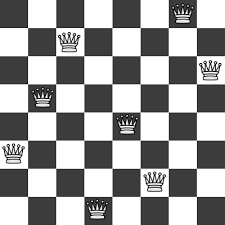
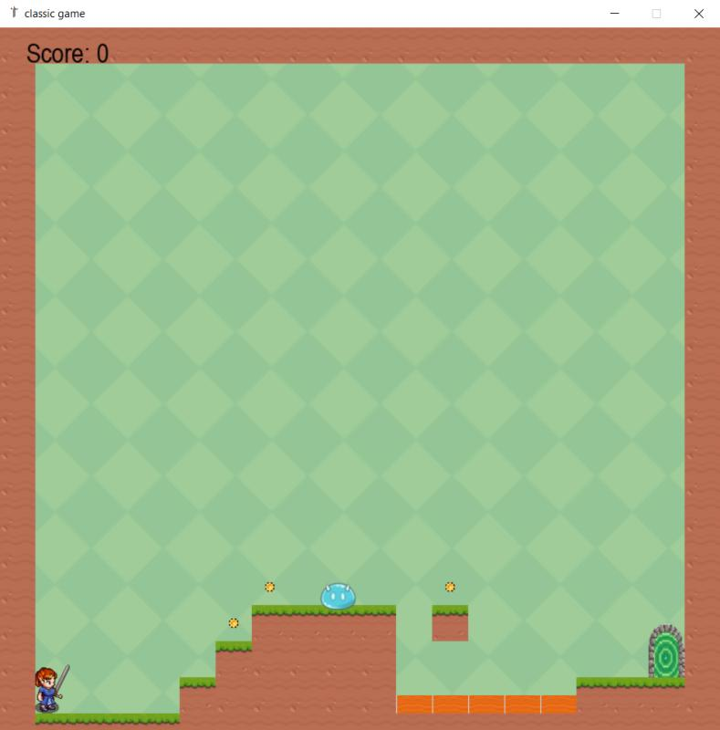
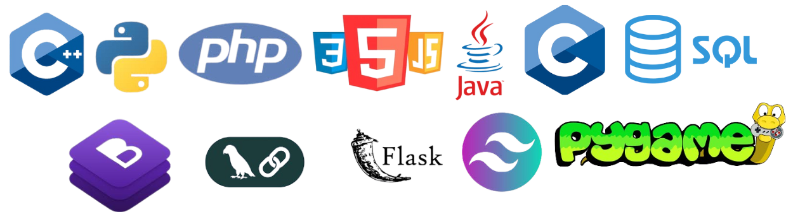

Intro
Hello! My name is Chatha, and I'm currently a senior-year student pursuing a Bachelor of Science in Computer Science at the Faculty of Science in Gabes. I have a strong passion for coding and am particularly skilled in Python programming. I enjoy learning new technologies and concepts, which fuels my excitement for exploring the ever-evolving field of computer science. I consider myself a fast learner, always eager to embrace new challenges and opportunities. I have a keen interest in learning new technologies and am always eager to expand my knowledge and skills. As a fast learner, I enjoy tackling challenges and exploring innovative solutions. By the way, check out my awesome work.
Work
Web Scraper
One of my key projects involved developing a web scraping tool using Python, Scrapy, and Pandas on GitHub. This tool extracts data from websites and classifies it into groups based on similarity.Check the code here
Fancy 8 Queens

Another project I'm proud of is the "Fancy 8 Queens," where I implemented an efficient solution to generate all possible chessboard configurations. I designed an algorithm to place 8 queens on an 8x8 board, ensuring no two queens threaten each other, using a recursive technique to find all possible solutions.Check the code here
Classic Game

I built a classic game using the Pygame framework and tested it with Pytest. The game features physics simulations, including gravity effects, and includes a scoring zone to track the game score.Check the code here
PDF QnA System with Feedback
Developed a tool using Python, LangChain, PyPDF2, and BeautifulSoup to process, embed, and retrieve information from PDF documents. The system combines natural language processing and machine learning, enhanced with an interactive feedback mechanism for improved performance.Check the code here
Skills

Technical Skills:
Languages: Java, Python, C/C++, SQL (Oracle SQL), JavaScript, HTML/CSS, PHP
Frameworks: Flask, Pytest, Pygame, LangChain, Bootstrap, Tailwind
Tools: Git, GitHub, Google Colab, VS Code, Word, PowerPoint, Excel, PyCharm, Netbeans, Trello
Libraries: pandas, NumPy, Scrapy
Contact
You can reach me here